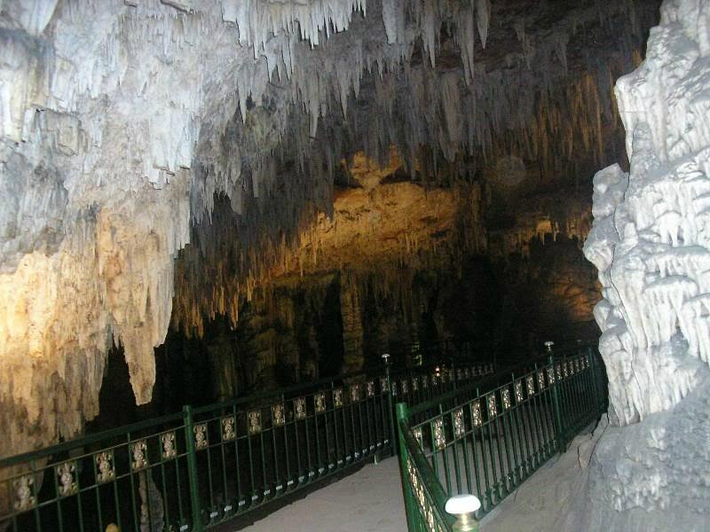

Les Grottes des Beni Add est une grotte qui se situe au parc national de Tlemcen. Elles sont situées à 17KMs environ de Tlemcen sur les hauteurs de la commune d’Ain Fezza, C’est l’un des plus importants musées naturels au monde.
s’étalent sur 700 m, avec une profondeur atteignant 57 m. ses parois volcaniques recèlent nombre de secrets avec les concrétions calcaires qui dessinent des stalactites et stalagmites aux formes les plus variées et de toute beauté.
Elles offrent aux visiteurs une expérience unique pour explorer des cavités souterraines et découvrir la beauté naturelle de la région. Les grottes de Beni Add sont un site touristique populaire à Tlemcen, attirant les amateurs de nature et d'aventure. N'hésitez pas à visiter ces grottes si vous vous trouvez dans la région de Tlemcen.